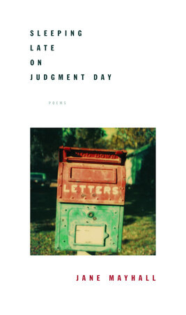
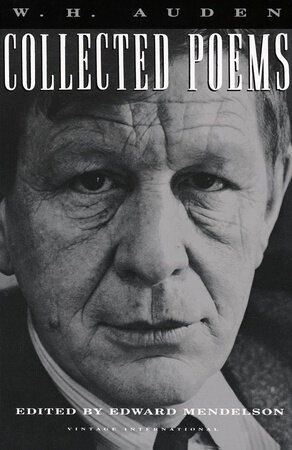
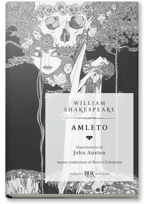
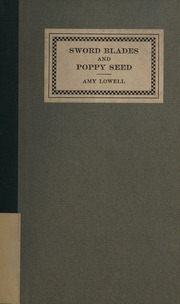
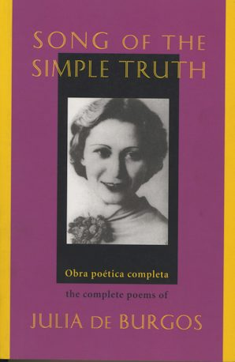
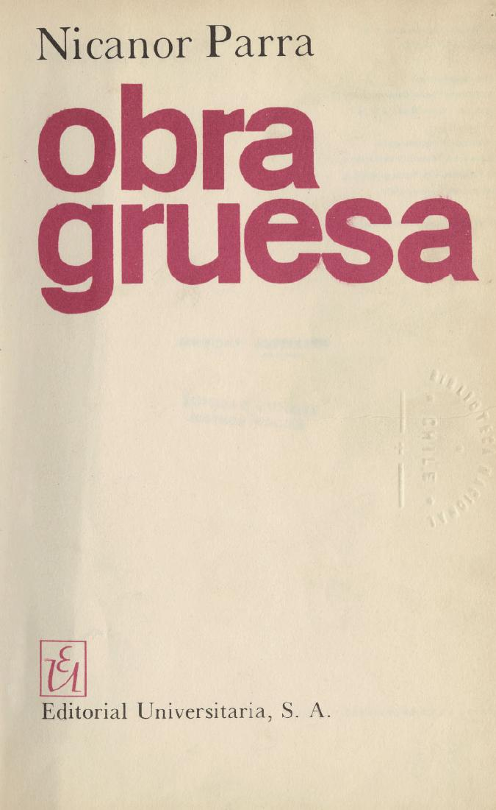
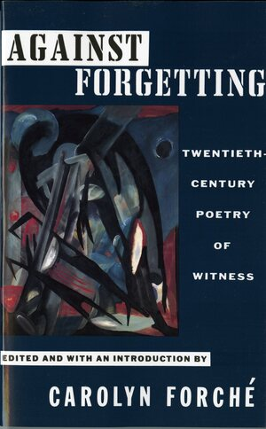

25:32 · 9 OPERE
Why do we need poetry?
Il filo del discorso
La domanda iniziale sul bisogno di poesia diventa una riflessione su ciò che il linguaggio poetico permette di conoscere e comunicare. Dr Divago sostiene che una società concentrata sull’utilità e sulle definizioni immediate perda il contatto con esperienze che non si lasciano ridurre a una descrizione pratica. Distingue le immagini convenzionali da quelle che cambiano il modo di sentire, passando da Jane Mayhall al lutto amoroso di Funeral Blues. Il confronto con Amleto mostra, nella sua lettura, come i testi possano rispondersi attraverso immagini e contrasti. The Taxi di Amy Lowell e Seawall di Julia de Burgos accompagnano il tema della separazione e del legame fra sentimento e paesaggio. L’antipoesia di Nicanor Parra introduce invece la distanza fra ciò che un autore vuole dire e ciò che le parole consegnano al lettore. La parte conclusiva difende lo spazio dell’interpretazione e il valore della singolarità, richiamando Borges, Octavio Paz e il caso storico di Mandel’štam. La poesia viene così proposta come esperienza di relazione, trasformazione e possibile dissenso; la diagnosi della sua marginalità contemporanea rimane un giudizio del relatore.
I libri nel discorso

Why a Corner in the Apartment Puts Me to Sleep
Identificazione probabile
Copertina della raccolta di Jane Mayhall: Knopf · Sleeping Late on Judgment Day · brossura 2005
Copertina autentica della raccolta Knopf in brossura del 2005; il componimento è documentato anche nella pubblicazione sul New Yorker del 2003. Non è una copertina autonoma della poesia né un’edizione identificata nella conferenza.
Jane Mayhall è nominata e un breve passo sull’assenza coincide con Why a Corner in the Apartment Puts Me to Sleep; titolo non pronunciato.
Passaggio 5:49 ↗ · Fonti e libro ↗
Romeo e Giulietta
Identificazione probabile
Copertina: BUR / Rizzoli, 2023; traduzione di Carmen Gallo
Copertina dell’edizione con testo inglese a fronte, introduzione, note e nuova traduzione di Carmen Gallo. Edizione scelta come riferimento iconografico; nessuna edizione è confermata nel video. L’identificazione dell’opera nel video resta probabile.
Il richiamo a Romeo nel discorso sull’amore suggerisce la tragedia, senza titolo annunciato.
Passaggio 7:37 ↗ · Fonti e libro ↗
Funeral Blues
Copertina dei Collected Poems che comprendono Funeral Blues: Vintage · Collected Poems of W. H. Auden · 1991 · a cura di Edward Mendelson
Copertina autentica dei Collected Poems, raccolta che comprende la poesia. Non è un’edizione autonoma di Funeral Blues e non identifica il volume usato dal relatore.
Auden e Funeral Blues sono annunciati, con lettura di versi e riferimento al film.
Passaggio 7:46 ↗ · Fonti e libro ↗
Amleto
Copertina: BUR · 2022 · traduzione di Rocco Coronato · illustrazioni di John Austen
Immagine autentica dell’opera, controllata visivamente; non identifica l’edizione usata nel video.
Amleto, Ofelia e Shakespeare sono nominati e viene letto il passo della lettera in II,2.
Passaggio 11:17 ↗ · Fonti e libro ↗
The Taxi
Fotografia della legatura della raccolta che contiene The Taxi: Houghton Mifflin · ristampa con colophon fino al 1922
Legatura autentica dell’esemplare Boston Public Library digitalizzato da Internet Archive. Il testo iniziale della stessa scansione riscontra Boston and New York, Houghton Mifflin Company, copyright 1914 e un elenco di ristampe fino ad agosto 1922. Non è la prima stampa Macmillan del 1914 e non si attribuisce questo esemplare al relatore. La voce riguarda la poesia The Taxi contenuta nella raccolta.
Amy Lowell e The Taxi sono annunciati prima della lettura.
Passaggio 14:02 ↗ · Fonti e libro ↗
Rompeolas (Seawall)
Copertina della raccolta che comprende Rompeolas / Seawall: Curbstone Books · Song of the Simple Truth · testo spagnolo e traduzione di Jack Agüeros
Copertina autentica della raccolta completa bilingue Curbstone, con traduzione di Jack Agüeros. La voce riguarda la poesia Rompeolas, letta in inglese come Seawall. Non è una sua edizione autonoma.
Julia de Burgos e il titolo inglese Seawall sono annunciati; Rompeolas è il titolo spagnolo riscontrato.
Passaggio 15:32 ↗ · Fonti e libro ↗
Me retracto de todo lo dicho
Copertina di Obra gruesa che comprende la poesia: Editorial Universitaria · Obra gruesa · Santiago, 1969 · copertina dalla scansione bibliotecaria
Riproduzione della sola copertina autentica di Obra gruesa, dalla scansione della Biblioteca Nacional de Chile, pagina PDF 1. La poesia appartiene alla sezione Otros poemas; non si attribuisce al relatore questa edizione.
Nicanor Parra e Me retracto de todo lo dicho sono riconoscibili, con successiva lettura inglese.
Passaggio 18:41 ↗ · Fonti e libro ↗
Vangelo secondo Matteo
Copertina del volume completo: San Paolo, 2014 · Nuova Versione dai Testi Antichi · edizione di riferimento
Vangelo secondo Matteo è un libro della Bibbia. L’immagine mostra il volume completo San Paolo di riferimento, non un’edizione autonoma del singolo libro e non una versione identificata nella citazione.
Il Vangelo di Matteo è nominato nel confronto fra diverse letture di un testo religioso.
Passaggio 21:08 ↗ · Fonti e libro ↗
Epigramma a Stalin (The Stalin Epigram)
Identificazione probabile
Copertina dell’antologia che comprende l’epigramma: W. W. Norton · Against Forgetting. Twentieth-Century Poetry of Witness · a cura di Carolyn Forché · 1993
Copertina autentica dell’antologia di più autori curata da Carolyn Forché, W. W. Norton. L’Academy of American Poets riscontra la presenza dell’epigramma in traduzione di Clarence Brown e W. S. Merwin. Non è la copertina di un libro scritto per intero da Mandel’štam né un’edizione citata nel filmato.
La poesia su Stalin e la persecuzione di Mandel’štam suggeriscono l’epigramma del 1933; titolo non annunciato.
Passaggio 24:16 ↗ · Fonti e libro ↗